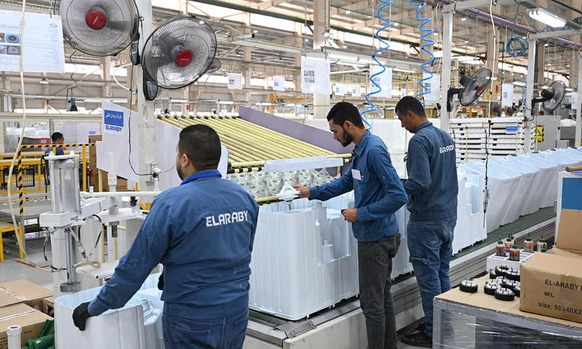
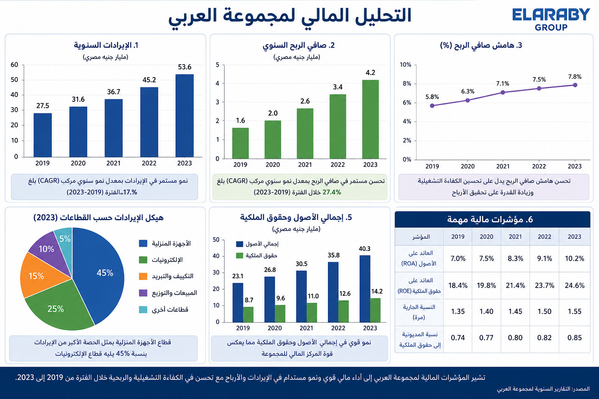
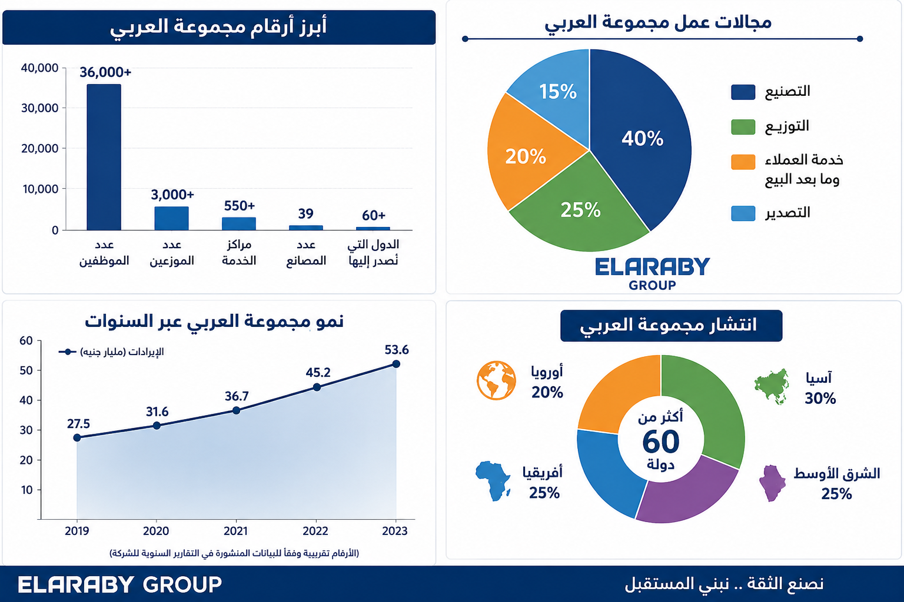

مجموعة العربي هي شركة مصرية رائدة في مجال الأجهزة المنزلية والإلكترونية، تأسست عام 1964 على يد محمود العربي، وتعد من أكبر المصنعين والموزعين في مصر والشرق الأوسط. وتضم أكثر من 39 مصنع وتنتج علامات تجارية شهيرة مثل شارب وتورنيدو وسوني.
معلومات أساسية:
- 39 مصنع
- 36,000 موظف
- 3000 موزع

يوضح هذا الرسم تطور الإيرادات لمجموعة العربي خلال الفترة من 2019 إلى 2023. حيث ارتفعت الإيرادات بشكل تدريجي خلال السنوات الأخيرة مما يدل على زيادة حجم المبيعات وتحسن أداء الشركة.
كما يوضح الرسم صافي الربح السنوي، حيث ارتفعت الأرباح من سنة إلى أخرى نتيجة تحسين الأداء المالي وزيادة كفاءة الإنتاج والتسويق. وهذا يدل على نجاح الشركة في تحقيق أرباح أعلى واستمرار النمو.
كما يعرض الرسم أيضًا هامش الربح الصافي، والذي يوضح نسبة الأرباح مقارنة بالإيرادات، وقد شهد تحسنًا تدريجيًا خلال السنوات المختلفة.
بالإضافة إلى ذلك، يوضح الرسم بعض المؤشرات المالية المهمة مثل الأصول وحقوق الملكية، مما يعكس قوة المركز المالي للشركة واستمرار نموها.

يوضح هذا الرسم أهم أرقام مجموعة العربي مثل عدد الموظفين والمصانع والموزعين داخل مصر وخارجها.
كما يوضح الرسم أن الشركة تمتلك أكثر من 39 مصنع، بالإضافة إلى أكثر من 3000 موزع، ويصل عدد الموظفين إلى حوالي 36 ألف موظف.
ويعرض الرسم أيضًا نمو الشركة عبر السنوات نتيجة زيادة الإنتاج والتوسع في الأسواق.
كما يوضح مجالات عمل الشركة المختلفة مثل التصنيع والتوزيع وخدمة العملاء والتصدير، مما يدل على تنوع أنشطة الشركة.
بالإضافة إلى ذلك، يوضح الرسم انتشار مجموعة العربي في عدد كبير من الدول داخل آسيا وأوروبا وإفريقيا والشرق الأوسط، مما يعكس قوة الشركة في الأسواق العالمية.